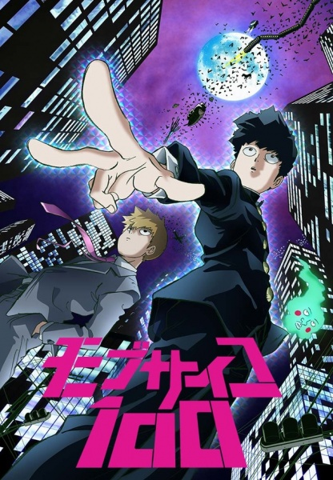
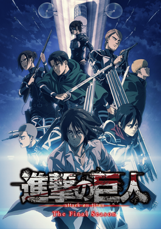

5th : My Hero Academia

The series focuses on a middle school student Izuku Midoriya, who has no superpowers. Will he be able to become a hero and somehow to contribute to the peace and stability in the world, where the weak is the minority that needs to be defended.
4th : Death Note

The story follows Light Yagami, a teen genius who discovers a mysterious notebook: the "Death Note", which belonged to the Shinigami Ryuk, and grants the user the supernatural ability to kill anyone whose name is written in its pages.
3rd : Mob Psycho

A psychic middle school boy tries to live a normal life and keep his growing powers under control, even though he constantly gets into trouble. With his psychic"mentor"( who has no psychic power), he continues his daily lifes, attempting to realize his purpose on life.
2nd : Demon Slayer
A youth begins a quest to fight demons and save his sister after finding his family slaughtered and his sister turned into a demon.
1st : Attack On Titan

Attack on Titan is set in a world where humanity lives inside cities surrounded by enormous Walls that protect them from Titans, gigantic humanoid creatures who devour humans seemingly without reason. The story centers around Eren Jaeger, his adoptive sister Mikasa Ackermann, and their childhood friend Armin Arlelt, whose lives are changed forever after the appearance of a Colossal Titan, which brings about the destruction of their home town and the death of Eren's mother. Vowing revenge and to reclaim the world from the Titans, Eren, Mikasa, and Armin join the Scout Regiment, an elite group of soldiers who fight Titans outside the Walls.